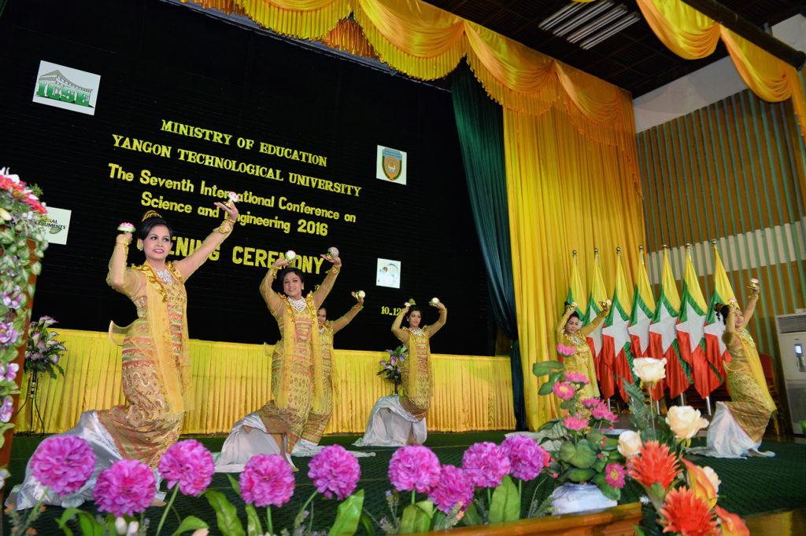
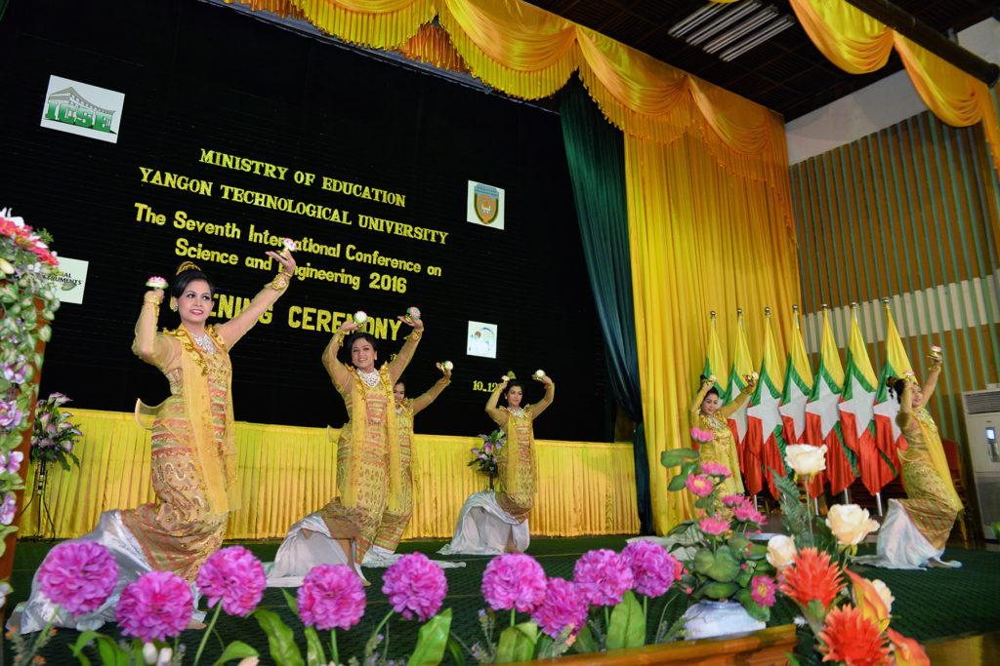
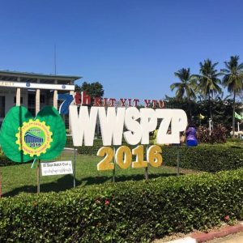
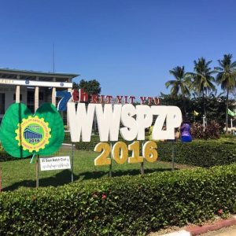

Swal Daw Leaf
Swal Daw Leaf (Bauhinia variegata's leaf) is a representation of YTU .
Our Objectives
It is envisaged that YTU will become a highly-prestigious technological centre of excellence in teaching and research with a strong commitment to systematically educate and train
Our Missions
To educate and train students systematically to become engineers, specialists and researchers who can effectively contribute to the building of a modern developed nation
Programs
when an unknown printer took a galley of type and scrambled it to make a type specimen book. It has survived not only five centuries, but also the leap into electronic typesetting,

Rector’s Messages
Yangon Technological University is one of the best universities in Myanmar and only allows admissions of students who gained high marks from the matriculation examination. A student's majorized engineering field is also decided by the marks he earned through the matriculation examination. Currently, YTU possesses 12 Engineering Departments, 6 Supporting Departments, 1 Research Centre and 47 Laboratories. There are currently about 2000 students seeking knowledge and experiences at YTU. VISION It is…
YTU Events
 



WELCOME TO YTU
Yangon Technological University is one of the best universities in Myanmar and only allows admissions of students who gained high marks from the matriculation examination. A student’s majorized engineering field is also decided by the marks he earned through the matriculation examination. Currently, YTU possesses 12 Engineering Departments, 6 Supporting Departments, 1 Research Centre and 47 Laboratories. There are currently about 2000 students seeking knowledge and experiences at YTU. Find out more about the history of YTU at …
25
DEPARTMENT PUBLISHED
1000
PROFESSIONAL LECTURES
2000
STUDENT ENROLLMENT
Updated News
Ministry of Education Yangon Technological…
Myanmar’s first Diploma Programme in…

7th WWSPZP

Swal Daw Leaf
Rector’s Collaborative Visit to University…
Training of IoT and Environmental…
Recent Posts
 
